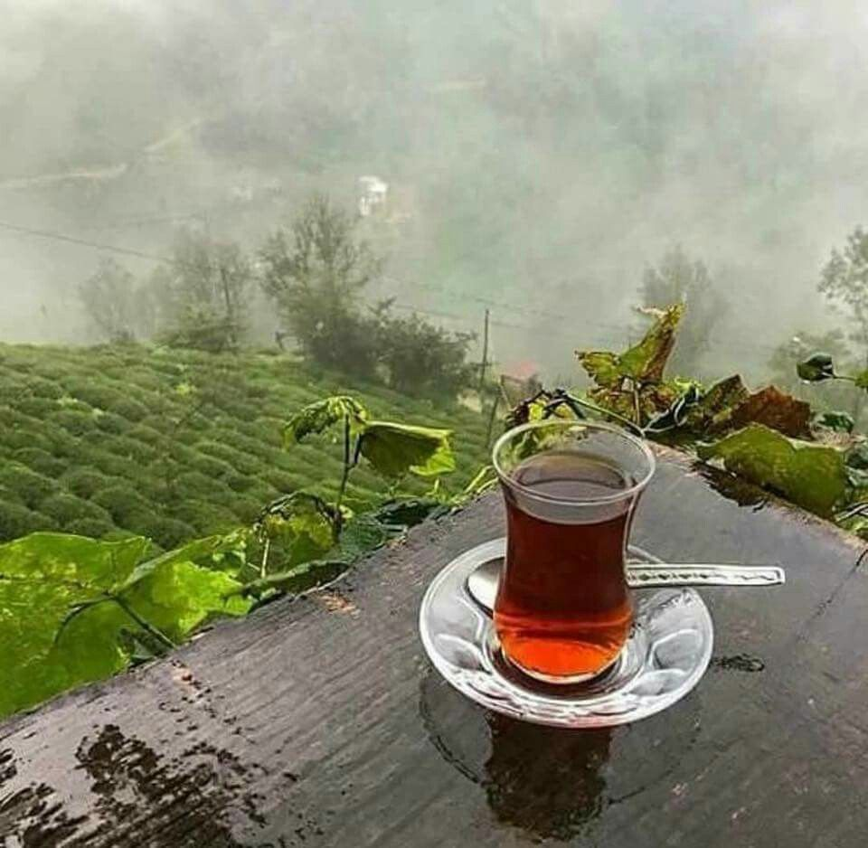

Çay
Rize çayı, Türk çayının yapımında kullanılan siyah çaydır. Türkiye'nin Doğu Karadeniz bölgesindeki Rize ilinde üretimi yapılmaktadır. Ilıman iklimin görüldüğü Rize, verimli toprakları ve bol yağışlı iklimiyle çay üretimi için ideal bir şehirdir. Rize çayının rengi kızıl kahverengidir. Bu çay, ev ve kahvehanelerde genellikle küçük, dar belli bardaklarda tüketilmektedir. "Demli" veya "açık" olarak içilen çay, geleneksel olarak toz şeker veya kesme şeker ile servis edilmektedir.

Rize, Kuzey Anadolu Dağları ile Karadeniz arasında yer alır ve Türkiye'nin "en yağışlı" köşesi olarak kabul edilir. Bu ortam çay yetiştiriciliği için özel bir ekosistem sağlar. Arazi birçok dağ vadisi ve biyolojik çeşitlilik içermektedir.
Rize'de 1912 yılında Ziraat Odası Başkanı Hulusi Bey'in girişimiyle çay deneme amaçlı yetiştirilmeye başlanmıştır. 1945'ten itibaren çay tarlaları daha büyük mahsuller üretmeye başladı. 1947'de ilk yerel çay fabrikası, 1958'de ise Rize ilinde ilk bölgesel çay araştırma enstitüsü kuruldu.
.png)